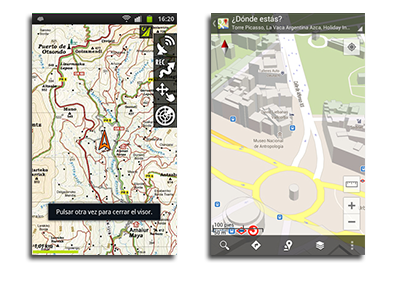

Aplicaciones Web
En CasabeSoft trabajamos contamos con especialistas con más de 10 años de experiencia en la creación de soluciones Web. Actualmente, nuestras soluciones están enfocadas a las plataformas ASP .NET y PHP. No obstante, según las necesidades del caso, podemos desarrollar las soluciones en con otras tecnologías como Python o JSP, según el caso.
Aplicaciones Móviles
Con más de 2 años de experiencia en el desarrollo para Windows Mobile y Android, en CasabeSoft estamos apasionados con el desarrollo para plataformas móviles, incluyendo Symbian, Firefox OS, BlackBerry y Windows Phone.
Mapas y cartografía

Google Maps revolucionó la forma en la que los consumidores comenzaron a aplicar los mapas a su cotidianidad. Sin embargo esta no es la única plataforma cartográfica ni es tampoco la perfecta para todos los desarrollos. Por eso, aunque llevamos más de 3 años trabajando con Google Maps, también aportamos soluciones en cartografía soportadas por otros proveedores como Bing Maps (de Microsoft), Yahoo Maps y OpenStreenMaps (la Wikipedia de los mapas).
Web services y soluciones de integración
La comunicación M2M ha crecido con el internet de las cosas. Por eso en CasabeSoft la integración de productos y servicios existentes, así como la extensión de los mismos, es un componente importante de nuestra cartera de servicios.
Aplicaciones de escritorio y Gestión de datos.
Por supuesto que si contamos con especialistas con más de 15 años de experiencia en el desarrollo de aplicaciones de gestión y aplicaciones de escritorio, en general; aunque sea el último punto, no es el menos importante. En CasabeSoft podemos desarrollar tus aplicaciones, o mantener y evolucionar alguna aplicación existente, desarrollada en .NET, Java, Delphi, VisualBasic y un largo etcétera.